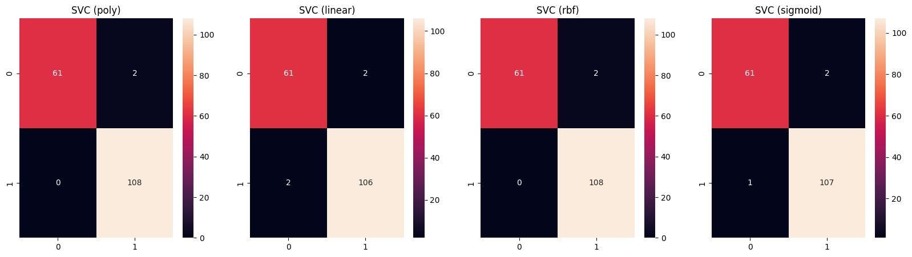
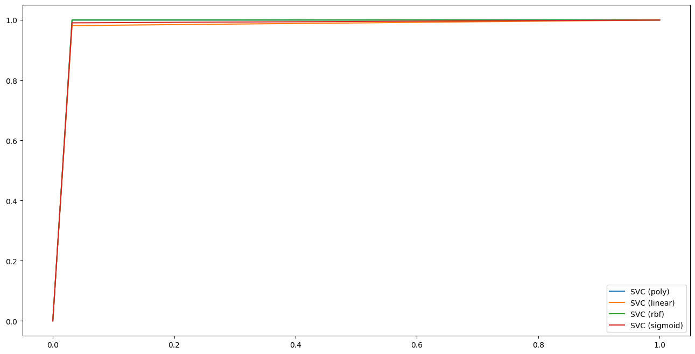

Breast cancer#
In cancer detection, we want to minimize incorrect negative predictions (i.e. the sick patient is classified as negative) because this diagnosis could lead to serious health problems. Therefore, the most important metric in the application of cancer detection is the recall which objective is to limit the number of false negatives.
Load data#
from sklearn.datasets import load_breast_cancer
cancer = load_breast_cancer()
cancer['target_names']
array(['malignant', 'benign'], dtype='<U9')
Target
‘0’ => malignant/sick
‘1’ => benign/safe
Preprocessing#
import pandas as pd
from sklearn.model_selection import train_test_split
df_cancer = pd.DataFrame(data=cancer['data'], columns=cancer['feature_names'])
df_cancer['target'] = cancer['target']
X_train, X_test, y_train, y_test = train_test_split(df_cancer.drop('target', axis=1), df_cancer['target'], test_size=0.3, random_state=42)
from sklearn.preprocessing import StandardScaler
scaler = StandardScaler()
X_train_sc = scaler.fit_transform(X_train)
X_test_sc = scaler.transform(X_test)
Training#
from sklearn.svm import SVC
from sklearn.preprocessing import MinMaxScaler, StandardScaler
nb_col = X_train.shape[1]
dict_models = [
{
'name_clf' : 'SVC (poly)',
'model': SVC(random_state=42, kernel='poly'),
'scalers' : {
'scaler': [StandardScaler(), MinMaxScaler()],
},
'grid' : {
'model__C': [10**k for k in range(-4, 5)],
'model__gamma': [10**k for k in range(-4, 5)],
}
},
{
'name_clf' : 'SVC (linear)',
'model': SVC(random_state=42, kernel='linear'),
'scalers' : {
'scaler': [None, StandardScaler(), MinMaxScaler()],
},
'grid' : {
'model__C': [10**k for k in range(-4, 5)],
'model__gamma': [10**k for k in range(-4, 5)],
}
},
{
'name_clf' : 'SVC (rbf)',
'model': SVC(random_state=42, kernel='rbf'),
'scalers' : {
'scaler': [None, StandardScaler(), MinMaxScaler()],
},
'grid' : {
'model__C': [10**k for k in range(-4, 5)],
'model__gamma': [10**k for k in range(-4, 5)],
}
},
{
'name_clf' : 'SVC (sigmoid)',
'model': SVC(random_state=42, kernel='sigmoid'),
'scalers' : {
'scaler': [None, StandardScaler(), MinMaxScaler()],
},
'grid' : {
'model__C': [10**k for k in range(-4, 5)],
'model__gamma': [10**k for k in range(-4, 5)],
}
},
]
Without scaler, SVC(poly) takes more than 2 days to run so we choose to use a scaler por poly kernel.
from sklearn.pipeline import Pipeline
from sklearn.model_selection import GridSearchCV
from time import time
from utils import model_evaluation_clf
import warnings
warnings.filterwarnings("ignore")
results = pd.DataFrame(columns=["Model", "CPU time", "Accuracy", "Precision", "Recall", "f1-score", "AUC"])
models = {}
nb_res = 0
for i, dict_clf in enumerate(dict_models):
model_name = dict_clf['name_clf']
print(f'Training {model_name}...')
model = dict_clf['model']
steps = [
('scaler', None),
('model', model),
]
pipeline = Pipeline(steps)
param_grid = {
**dict_clf['scalers'],
**dict_clf['grid']
}
clf = GridSearchCV(pipeline, param_grid=param_grid, cv=5, n_jobs=-1, verbose=1)
start_time = time()
clf.fit(X_train, y_train)
end_time = time()
print(f"Best params {model_name}: \n{clf.best_params_}")
eval = model_evaluation_clf(clf, X_test, y_test)
models[model_name] = clf
results.loc[nb_res] = [model_name, round(end_time - start_time, 1), eval['accuracy'], eval['precision'], eval['recall'], eval['f1'], eval['roc_auc']]
nb_res += 1
print(f"CPU Time: {round(end_time - start_time, 1)}s")
print()
Training SVC (poly)...
Fitting 5 folds for each of 162 candidates, totalling 810 fits
Best params SVC (poly):
{'model__C': 0.0001, 'model__gamma': 10, 'scaler': MinMaxScaler()}
CPU Time: 1.5s
Training SVC (linear)...
Fitting 5 folds for each of 243 candidates, totalling 1215 fits
Best params SVC (linear):
{'model__C': 100, 'model__gamma': 0.0001, 'scaler': MinMaxScaler()}
CPU Time: 91.6s
Training SVC (rbf)...
Fitting 5 folds for each of 243 candidates, totalling 1215 fits
Best params SVC (rbf):
{'model__C': 10, 'model__gamma': 0.1, 'scaler': MinMaxScaler()}
CPU Time: 1.0s
Training SVC (sigmoid)...
Fitting 5 folds for each of 243 candidates, totalling 1215 fits
Best params SVC (sigmoid):
{'model__C': 1000, 'model__gamma': 0.01, 'scaler': MinMaxScaler()}
CPU Time: 0.8s
Results#
print(results.to_string(index=False))
Model CPU time Accuracy Precision Recall f1-score AUC
SVC (poly) 1.5 0.988 0.982 1.000 0.991 0.984
SVC (linear) 91.6 0.977 0.981 0.981 0.981 0.975
SVC (rbf) 1.0 0.988 0.982 1.000 0.991 0.984
SVC (sigmoid) 0.8 0.982 0.982 0.991 0.986 0.979
The best model is SVC with rbf kernel because it is almost as fast as sigmoid but its AUC is the best (with the poly one, but much faster). And SVC (rbf) has a recall of 1 that is the most important metric in this use case.
import matplotlib.pyplot as plt
import seaborn as sns
from sklearn.metrics import confusion_matrix
fig, axs = plt.subplots(1, 4, figsize=(20, 5))
for i, model_name in enumerate(models.keys()):
model = models[model_name]
y_pred = model.predict(X_test)
cm = confusion_matrix(y_test, y_pred)
sns.heatmap(cm, annot=True, fmt='d', ax=axs[i])
axs[i].set_title(model_name)
plt.show()

import matplotlib.pyplot as plt
from sklearn.metrics import roc_curve
fig, ax = plt.subplots(figsize=(16, 8))
for model_name in models.keys():
model = models[model_name]
y_pred = model.predict(X_test)
fpr, tpr, _ = roc_curve(y_test, y_pred)
ax.plot(fpr, tpr, label=model_name)
plt.legend()
plt.show()
